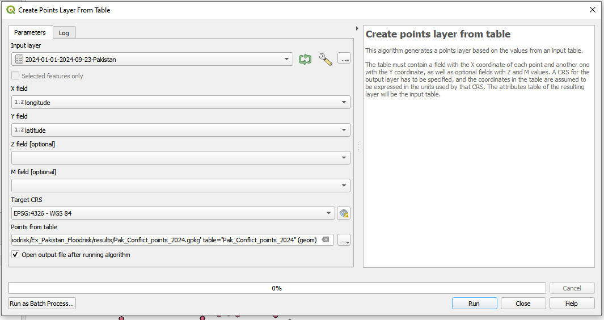
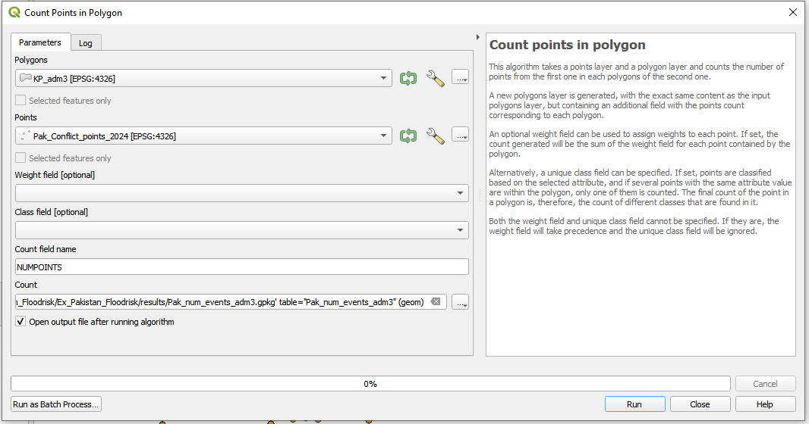
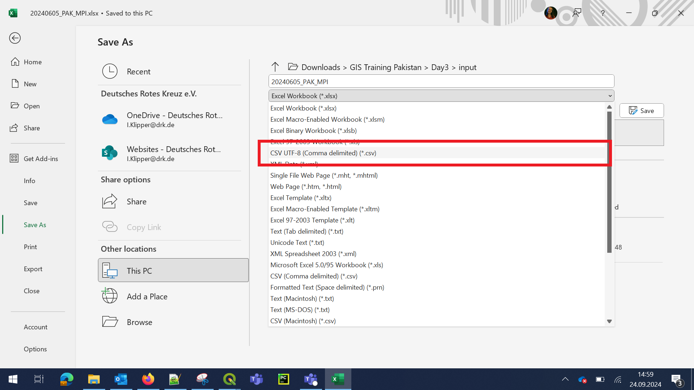
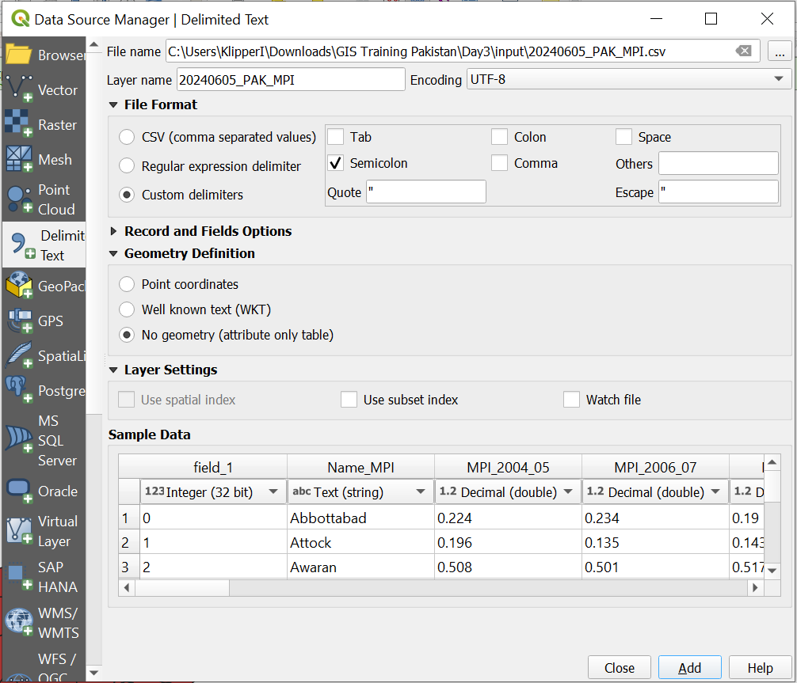
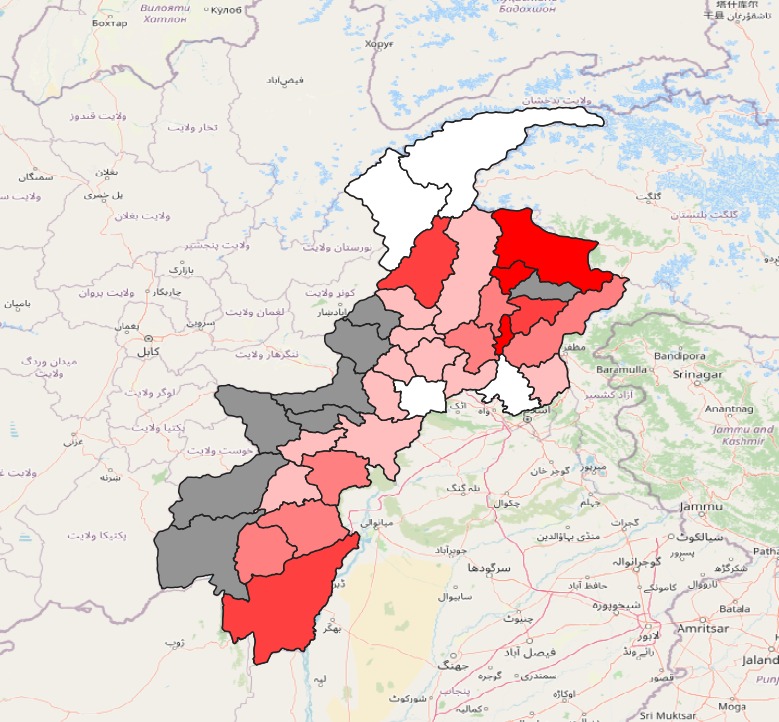

Exercise 4: Security Peshawar#
Aim of the exercise:
In this exercise, we will create a security map for a humanitarian team. In response to a recent cholera outbreak in Khyber Pakhtunkhwa (KP), the Pakistan Red Crescent Society (PRCS) and other Partner National Societies (PNS) have mobilized a team to this region. The primary objective of the team is to conduct a comprehensive assessment on the ground and facilitate coordination for any necessary future responses.
In order to ensure the safety of our team, we will create a map displaying security related information such as bomb threats. Additionally, we will take a look at data on armed conflicts and create an overview map showing the conflicts per thesil (subdistrict/ADM3).
In order to achieve this, we will use more advanced geoprocessing tools such as buffers and intersection tools and join two datasets using attribute table joins.
The exercise is split into three tasks:
In the first task, we will digitise security-related information as point data and create buffer zones to indicate high-risk zones.
In the second task, we will load a csv-file with data on conflict events that happened in Pakistan. We will use this dataset to find out the number of conflict events per thesil (subdistrict).
In the third task, we will load another csv-file with data on the multi-poverty-index (MPI) per district (ADM2). The Multidimensional Poverty Index (MPI) measures poverty by looking at more than just income. It includes things like education, health, and living standards to understand how people are poor in different ways. The csv-file does not contain explicit spatial information. We will add spatial information by joining it to a polygon layer containing the district boundaries.
Larkana Flood Response Exercise Track:
This exercise is part of the Larkana Flood Response Exercise Track.
However, the exercise can be done without completing the previous exercises.
These skills are relevant for
QGIS Essentials
Working with multiple layers
Conduct spatial queries
Creation of geodata
Estimated time demand for the exercise:
The exercise takes around 3 hours to complete, depending on the number of participants and their familiarity with computer systems.
Relevant wiki articles:
Instructions for the trainers#
Trainers Corner
Prepare the training
Take the time to familiarise yourself with the exercise and the provided material.
Prepare a white-board. It can be either a physical whiteboard, a flip-chart, or a digital whiteboard (e.g. Miro board) where the participants can add their findings and questions.
Before starting the exercise, make sure everybody has installed QGIS and has downloaded and unzipped the data folder.
Check out How to do trainings? for some general tips on training conduction
Conduct the training
Introduction:
Introduce the idea and aim of the exercise.
Provide the download link and make sure everybody has unzipped the folder before beginning the tasks.
Follow-along:
Show and explain each step yourself at least twice and slow enough so everybody can see what you are doing, and follow along in their own QGIS-project.
Make sure that everybody is following along and doing the steps themselves by periodically asking if anybody needs help or if everybody is still following.
Be open and patient to every question or problem that might come up. Your participants are essentially multitasking by paying attention to your instructions and orienting themselves in their own QGIS-project.
Wrap up:
Leave time for any issues or questions concerning the tasks at the end of the exercise.
Leave some time for open questions.
Available Data#
Download all datasets here and save the folder on your computer and unzip the file.
Dataset name |
Original title |
Publisher |
Download from |
|---|---|---|---|
2024-01-01-2024-09-23-Pakistan.xlsx |
Conflict data for Pakistan 01/2024-09/2024 |
ACLED |
HDX |
PAK_KP_admin_3.gpkg |
Administrative Boundaries level 3 of KP |
UN OCHA |
HDX |
Pak_adm2_Khyber Pakhtunkhwa.gpkg |
Administrative Boundaries level 1 of KP |
UN OCHA |
HDX |
20240605_PAK_MPI.xlsx |
Pakistan Multi Poverty Index (MPI) |
Pakistan Bureau of Statistics |
Pakistan Bureau of Statistics |
AOI_Peshawar.gpkg |
Area of Interest (AOI) around Peshawar |
Preparation#
Create a new QGIS project and save it into the exercise folder.
Task 1: Geolocate security-related information of the last days#
In response to a recent cholera outbreak in Khyber Pakhtunkhwa (KP), the Pakistan Red Crescent Society (PRCS) and other Partner National Societies (PNS) have mobilized a team to this region. The primary objective of the team is to conduct a comprehensive assessment on the ground and facilitate coordination for any necessary future responses. The team will be staying at the “Roomy Crossroad Hotel Peshawar” during their mission in the affected area. We have received security-related information from various sources. Our task is to digitise this information into spatial data that can be represented on a map.
For this exercise, we will be using the plugin “QuickMapService” to locate places precisely. The QuickMapServices plugins allows you to easily add basemaps or other map services as a layer to your QGIS-project. To install the plugin:
In the menu bar, click on
Plugins->Manage and Install Plugins.... A new window will open.Under
All, search for “QuickMapServices”. Click on it and selectInstall Pluginin the bottom right corner.
After installing the plugin, we can add basemaps:
In the menu bar, navigate to
Web->QuickMapServices->ESRI->ESRI Satellite. This will add Satellite image basemap in your Layer panel.Let us also add a roads layer to make the orientation easier:
Web->QuickMapServices->Google->Google Road.In the layers panel, make sure the
Google Roadlayer is above the satellite imagery.For easier navigation, make the satellite imagery transparent by navigating to the symbology tab and adjusting the global opacity.
We will be needing the plugin “Lat Lon Tools” to locate the coordinates we receive from the field. To install the plugin, follow the same instructions as for the QuickMapServices plugin but search for “Lat Lon Tools” instead.
Great, now we have set up our QGIS-project and can start to digitise the known incidents and related areas of interest (as polygons). Below, you will find a table with the information and locations. Read through the table once and think about what kind of geometry type can represent the information.
Number |
Description |
|---|---|
1 |
A bomb threat including Improvised Explosive Devices (IED) on the road N45 right between Seri-Bahlol and Tableeghi Markaz Mardina near Jandy has been reported by local radio stations. Please mark the area between the communities along the road as no-go areas. |
2 |
In a conversation with a PRCS driver, a local teacher shared that the vicinity of the Government Girls Primary School in Takkar is notorious for being a minefield. Specifically, the fields between the school and the Noormuhmmad hospital are known to be heavily mined. Due to this danger, local farmers are extremely reluctant to work on this particular piece of land. |
3 |
Following the recent events, it has been decided that the vicinity surrounding the Arbab Niaz Cricket Stadium Peshawar is now designated as a no-go area for all staff members. This area encompasses the region bordered by the N5 road to the south, the Afghan Colony road to the north and east, and the Charsadda Road to the west. |
4 |
GPS Coordinates: (33.99519949518549, 71.66217873936723). A humanitarian worker was transporting medical supplies through the region when they were approached by a local farmer. The farmer mentioned that a nearby abandoned well, located at these coordinates, has become a gathering point for unexploded ordnance. Due to its proximity to a residential area, this site is now flagged as high-risk and needs immediate attention from demining teams. |
5 |
GPS Coordinagtes: (34.02878398623702, 71.43081737211224). A health unit here has recently been vacated after a bomb threat was called in. Police and bomb squads searched the premises but didn’t find any explosives. However, local business owners reported unusual activity around the building in the weeks leading up to the threat. This location is now under surveillance. The area between the health unit and the river, as well as the parks and playground behind it, need to be marked as a temporary no-go zone. |
6 |
Qissa Khwani Bazaar, Peshawar: A popular historical market at this address has become a focal point for local community gatherings, but recent intelligence reports suggest that the site could be at risk for political protests that have turned violent in the past. Authorities are now considering setting up temporary barriers to manage the flow of people, and it’s crucial that this location is marked as a high-risk area for potential crowd control measures. |
In order to digitise the information, we will need two new layers: A point layer and a polygon layer. In case the information states an exact area, create a new polygon layer and map it exactly.
Create a new point and a new polygon layer to digitise point and polygon information.
Tip
When creating the point and polygon layer use the CRS UTM 42 N EPSG: 32642. This Coordinate reference system is ideal for Pakistan and the units of measurement are in meters.
Find the locations from the table and create new features using the digitisation toolbar. Capture the information in the table and Use Google or another search engine in your browser, the base map, and the Lat Lon Tools plugin to locate the exact position.
Once you are done, make sure to save the edits to your layers by clicking on the
Save Layer Edits-button.
Great, we have successfully digitised the important security information. However, to make the information useful, we need to process the geodata.
The current SOP states that the sides of recent violent incidents are to be avoided in a 1 km radius. To reflect this on the map, we will use the  buffer tool.
buffer tool.
Create a buffer around the points of violent incidents with a distance of 2.000 meters.
We now have two polygon layers (the point buffers and the digitised areas). In order to visualise the No-Go Area in Peshwar, we can merge the polygons from both layers into a single layer with the tool
Merge vector layerand select both layers we want to merge as inputs.Load the layer
AOI_Peshawar.gpkginto your project.
We want to create a polygon indicating the safe area where the team is allowed to travel. To do this, we need to “invert” the polygon. We can achieve this by using the tool
Symmetrical difference:In the processing toolbox, search for the tool “Symmetrical difference” and open it.
As
Input Layer, select your layer containing the security information.As
Overlay Layer, select the layerAOI_Peshawar.gpkg.Under
Symmetrical Difference, click on...and navigate to thedata/results/-folder for this exercise and save the layer.Click
Run.
Let’s do a quick symbolisation of the resulting layer so we can understand the information more easily:
Open the styling panel for the safe area.
Adjust the symbology for the layer so that the polygons are semi-transparent and green.
Congratulations! We now have a map to help the team on the ground stay safe.
Task 2: Load Excel File containing conflict data into QGIS#
Context:
In this step, we want to get a broader overview of conflict events in Pakistan. The Armed Conflict Location and Event Data project (ACLED) distributes datasets on conflict events per country as excel spreadsheets. The datasets include dates, actors, locations, fatalities, and types of reported conflict events.
The dataset also includes geographic coordinates for each reported event. In QGIS, we can transform the datatable into a spatial dataset, such as a GeoPackage. Once we have the conflict events as point data, we can aggregate the data on subdistrict level and create a map showing the subdistricts (ADM3) most affected by conflict.
Drag and Drop the ACLED conflict excel table
2024-01-01-2024-09-23-Pakistan.xlsxinto your QGIS project.In the processing toolbox, find the tool
Create points layer from tableand open it.As
X Fieldselect the column “longitude”, and asY Fieldselect “latitude”.Under
Points from Table, click on the three dots, choose ‘Save to GeoPackage’ and navigate to you temp folder. Save the layer with the name “Pak_Conflict_points_2024”.Click
Run.
{kind=link}

Create points from table.#
Great! We now have a point layer showing the conflict events in Pakistan. Now, we could investigate this dataset further by taking a look at the attribute table and see what kind of information is represented. However, we want to know the number of conflict incidents per thesil (subdistrict/ADM3). To calculate this:
Import the layer
PAK_KP_admin_3.gpkgfrom yourdata/input-folder into your QGIS-project.We want to count the number of conflict events per thesil (subdistrict/ADM3). To do this:
In the processing toolbox, find the tool
Count points in polygonand open it.As
Polygons, selectPAK_KP_admin_3-layer.As
Point Input, select thePAK_Conflict_points_2024.Under
Count, click on the...and save the layer in yourdata/results/-folder as “PAK_num_events_adm3”.
{kind=link}

Count points in polygon#
Open the attribute of your ‘Pak_num_events_adm3’ layer and scroll to the right. You will find a column with the name “NUMPOINTS”. Here you find the number of events per thesil.
Right-click on the layer and navigate to
Properties–>Symbology. On the top change Single Symbol to “Graduated”.In the
Valuefield choose “NUMPOINTS”.
Then below click on
Classify.You can adjust the Mode and the number of classes if wanted. Also you can choose your preferred color ramp. You can try out different coloring options.
Once you are satisfied with the look, click ‘Apply’ and then ‘OK’.
Your result could look similar to this:

Number of conflict events per thesil.#
Task 3: MPI data#
Context:
In this step, we want to visualise the Multi-Poverty index on district level (ADM2).
This can help us understand the economic and social vulnerability geographically. The data with the MPI index is available in an excel spreadsheet. However, it does not contain columns with the specific geographic data (such as coordinates). We have to find a way to join the data table with a spatial dataset.
First, let us open the spreadsheet with Microsoft Excel or a similar program (such as LibreOffice Calc):
Here, you can already investigate the information that is stored in the different columns. Can you identify columns that contain spatial information?
For now, let us export the file as a CSV UTF-8.
Click on
File->Save AsChosse an output folder, where it will be saved (the
data>tempfolder is recommended here) and give the file a meaningful name, for instance 20240605_PAK_MPI.Choose the option CSV UTF-8 (Comma delimited) (*.csv) and
Save.

Convert Excel to CSV#
Open QGIS and create a new project. Save the project in your project folder.
Import the layers
__20240605_PAK_MPI.csv__andPak_adm2_Khyber Pakhtunkhwa.gpkgto QGIS:Drag and drop the ADM2-layer into your QGIS-window.
To import the CSV-file, click on the
Layertab ->Add Layer>Add Delimited Text.Browse for your 20240605_PAK_MPI.csv file.
Choose the correct
File Fromat:Custom delimters->Semicolon.Go to the tab
Geometry Definitionand chooseNo geometry. We don’t have a column with coordinates or geoemtry information, but only the admin2 name and P-Code.Add layer and close the window.

Load CSV file to QGIS#
{kind=link}
{kind=link}
Now, we need to join the data to existing to the existing district boundaries (ADM2). This process is called a non-spatial join and it allows us enrich datasets using attribute data. In our case, the MPI dataset contains a column with the district names (admin2) and the P-Codes. P-Codes are international codes for administrative boundaries and are generally the best way to identify an administrative units, as names can have several spellings. Our polygon-layer also has columns with the p-codes.
So, we need to perform a non-spatial join using the P-Codes Columns as identifiers. To do this,
Open the attribute table of the attribute table and detect the column which contains the information you want to use to join the data with the location. E.g. City name, district name, or best the P-Code. In our case it is
ADM2_PCODE.Hint: Each administrative level and area contains a worldwide unique code number. This helps to determine the exact administrative boundary without misspelling the name of the area.
Now, we need the polygon layer with the administrative boundaries.
Open the attribute table for the layer Pak_adm2_Khyber Pakhtunkhwa.gpkg and locate the column containing the P-Code. How is it called?
To link the two layers, open the Toolbox and search for the tool Join attributes by field value. Open it.
Input layer: Pak_adm2_Khyber Pakhtunkhwa.gpkgTable field: admin2PcodeInput layer 2: 20240605_PAK_MPI.csvTable field 2: ADM2_PCOCDEChoose a location to save the file as GeoPackage and give it a meaningful name, for instance MPI_Admin2_joined.gpkg
Runand close.

Join the districts with the MPI data#
Info: You can see that not all areas are visible. Since we don’t have data for all districts, only the districts were linked with the csv on which we have MPI data.

Information of not joined and linked data#
Visualize MPI_Admin2_joined.gpkg file: We have a new file, showing the district boundaries, but having the MPI information in the attribute table. The MPI value per district we now want to visualize.
Open the
Symbologywindow of the file MPI_Admin2_joined.gpkg.Decide which column you want to visualize. For instance the values of the year 2014 in the column A_2014_15.
Choose
Graduatevisualization.Choose
ValueA_2014_15.Click
Classify.Choose Mode
Pretty Breaks.Click
OKand close the window.
Visualize Pak_adm2_Khyber Pakhtunkhwa.gpkg layer for districts we don’t have MPI data on.
Open the
Symbologywindow of the file Pak_adm2_Khyber Pakhtunkhwa.gpkg.Change the color, maybe to dark grey, so we can differentiate between the districts we have and don’t have MPI data for.
Add OpenStreetMap as a baselayer for better orientation.
{kind=link}

Visualized MPI data on district level.#